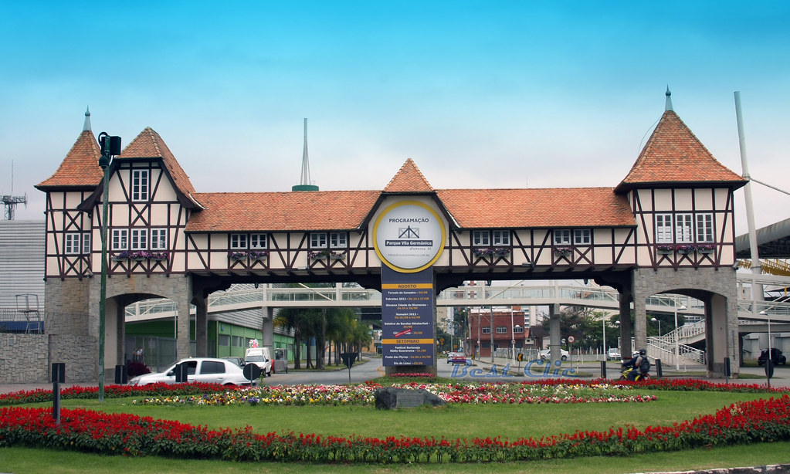
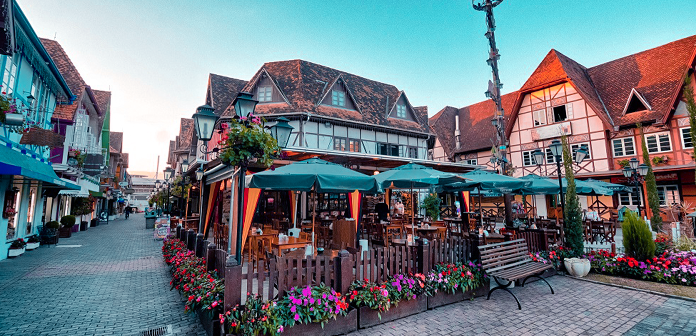

Vila Germânica
Vila Germânica
Vila Germânica
Sobre
A Vila Germânica Blumenau é um centro de eventos e um complexo cultural localizado em Blumenau, Santa Catarina, Brasil. Inaugurado em [ano de inauguração], o espaço é conhecido por sua arquitetura inspirada na tradição germânica e desempenha um papel central na celebração da herança cultural da cidade.Principais Atrações e Atividades O principal evento realizado na Vila Germânica é a Oktoberfest Blumenau, uma das maiores festas de Oktoberfest fora da Alemanha. Durante este festival, a Vila Germânica se transforma em um vibrante centro de celebrações, com música, dança, gastronomia e tradições alemãs. Além da Oktoberfest, o complexo sedia uma variedade de outros eventos culturais, feiras e exposições ao longo do ano, que atraem tanto visitantes locais quanto turistas.
Importância Cultural e Econômica A Vila Germânica é um ícone da influência alemã em Blumenau e umimportante ponto de encontro para a comunidade. Ela serve como um espaço para a preservação e promoção da cultura alemã, refletindo a herança dos imigrantes que ajudaram a moldar a cidade. Além disso, a Vila Germânica desempenha um papel significativo na economia local, atraindo turistas e gerando oportunidades de negócios e emprego.
Arquitetura e Infraestrutura O design da Vila Germânica é inspirado na arquitetura tradicional alemã, com edifícios que remetem às construções típicas da região da Renânia. O espaço é equipado com modernas instalações para eventos, incluindo áreas para exposições, pavilhões e praças, oferecendo uma infraestrutura que combina charme histórico com comodidades contemporâneas.
Eventos e Programas Especiais Além da Oktoberfest, a Vila Germânica organiza eventos temáticos, festivais culturais, e exposições que destacam diversos aspectos da cultura e da história germânica. A programação inclui atividades para todas as idades, desde apresentações musicais até workshops sobre tradições alemãs.